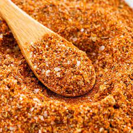

Taco Seasoning

Description
seasoning is a savory spice blend that's used
to add warm, spicy, and smoky flavor to all kinds
of dishes, from tacos to soups and casseroles.
Taco seasoning is a savory spice blend that's used
to add warm, spicy, and smoky flavor to all kinds of dishes,
from tacos to soups and casseroles.
Ingredients
- 1 tablespoon chili powder
- 1 1/2 teaspoons ground cumin
- 1/4 teaspoon garlic powder
- And more ofc
Steps
- Mix together chili powder, cumin, salt, ect...
- Mix together garlic powder and onion powder
- Mix all together in small bowl